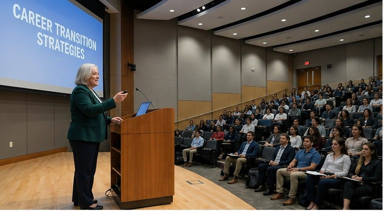
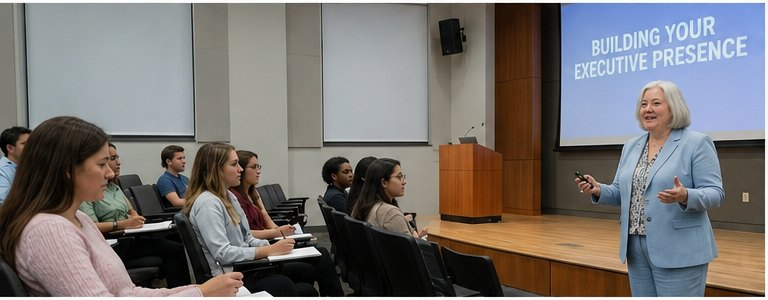
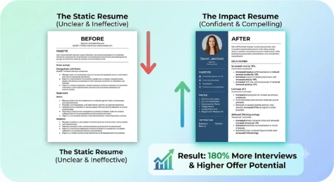
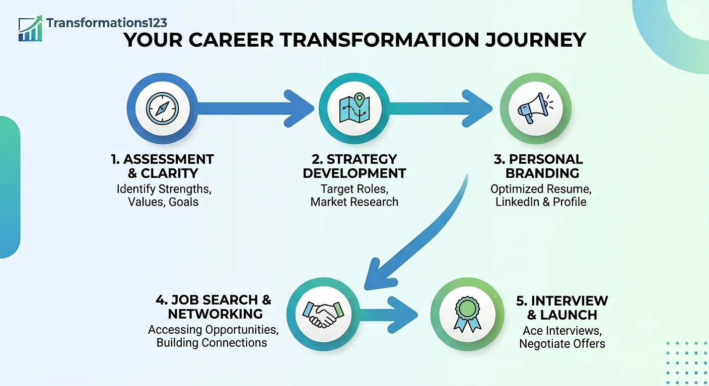
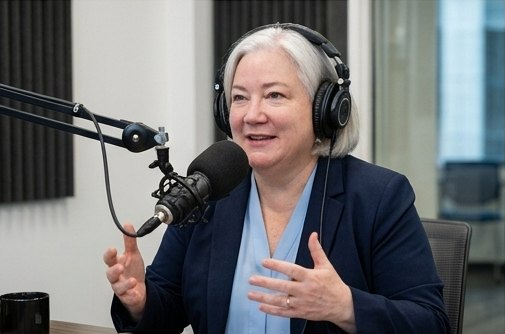
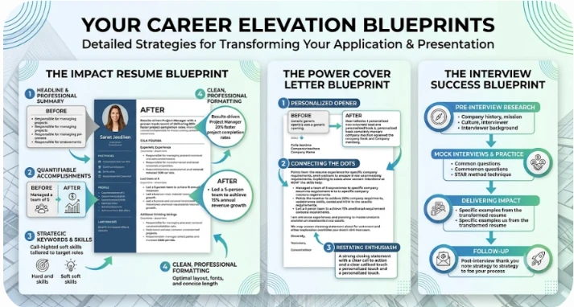

One to one
Across the table
Your résumé, your LinkedIn, your interview story — rebuilt together, in your own words.

Translate your public service into private-sector leadership. Position your value. Land the role you've already earned.

Executive presence isn't volume, and it isn't polish. It's saying the significant thing, in the language the room is listening for. Amy has taught that in lecture halls, agency transition programs and boardrooms on four continents — and it's exactly what she builds with you, one to one.
What's the #1 reason accomplished government and military leaders get passed over for private-sector roles?
Grade levels, billets and acronyms become scope, results and business impact a CEO understands.
Executive roles are won with a value proposition and a network — not the "Apply" button.
Remove the jargon. Strengthen executive presence. Tell the leadership story behind every accomplishment.
Stop accepting roles two levels below where you belong. Negotiate from a position of clarity.
Left: how most federal résumés arrive. Right: how Amy positions the same leader for a private-sector executive role.
DUTIES AND RESPONSIBILITIES
Responsible for the oversight of acquisition program activities in accordance with DoD 5000.02, FAR/DFARS, and agency policy. Serves as COR on multiple contracts. Coordinates with PEO, DCMA, and stakeholder organizations. Prepares briefings for senior leadership. Supervises subordinate staff and ensures compliance with applicable regulations, directives and guidance. Participates in IPTs and working groups as required. Performs other duties as assigned.
QUALIFICATIONS
Level III DAWIA certified in Program Management. Secret clearance. Proficient in Microsoft Office.
Vice President, Operations & Program Delivery
Executive who has led $45M+ portfolios and 120-person organizations through complex, regulated delivery — on time, under budget, with stakeholders aligned from the boardroom to the field.
Leadership impact
Illustrative example. Every client résumé is written from scratch by Amy — a certified résumé writer — never from a template.

Four steps, in order, every time. It's the same sequence behind every successful transition Amy has guided — whether it takes six weeks or six months.
Decode what your record really proves — program management, budgets, oversight, stakeholder alignment — and turn it into business value.
From applicant to candidate. From responsibility to impact. You learn to see, and say, the significance of your own leadership.
An executive résumé, a LinkedIn profile recruiters find, and an interview narrative free of jargon and full of presence.
Target-employer strategy, networking that gets you into rooms, and a 90-day plan so the first quarter confirms the hiring decision.

Amy Sindicic helps government and military professionals transition into private-sector leadership roles by clarifying their value, strengthening their positioning, and aligning their résumés, LinkedIn profiles and interview strategies to today's market expectations.
A certified Career and Life Coach, Certified Résumé Writer and Interview Coach with a Master's in Marketing, Amy has worked globally across four continents, supporting senior professionals in articulating complex experience with clarity, precision and confidence.
Meet AmyThe workshops, the podcasts and the lecture halls are how leaders find her. The work itself happens across a table — one conversation at a time.
Your résumé, your LinkedIn, your interview story — rebuilt together, in your own words.

Podcasts, panels and agency transition programs on what actually moves senior candidates forward.
Agency transition programs and university lecture halls — where hundreds of leaders first meet the method.
Bring where you want to go. Leave with an honest read on what it takes to get there.
Book a discovery callEvery engagement is one-to-one with Amy. Choose the level of support that matches where you are in the transition.
"What can I actually do in the private sector?"
"I know where I'm going — but I'm not positioned to compete there."
"Position me — and help me land."
Amy works with a limited number of 1:1 clients at a time. Also available: SES packages (résumé, ECQs, TQs) and group workshops for transition programs. Ask on a discovery call.

After Amy rewrote my resume, I immediately began receiving invites for interviews and soon after was hired for a position in my career field.
Her personal coaching is superb and has helped me to secure numerous executive-level leads. I would highly recommend her to anyone looking for their next career position.
She helped me learn more in 5 days than I would have figured out myself. If you are looking for someone to help you, Amy is the one!
I recommend Amy a thousand times over!
★★★★★After Amy rewrote my resume, I immediately began receiving invites for interviews and soon after was hired for a position in my career field.
★★★★★Amy is an extremely talented and articulate writer who has a firm grasp on what present-day employers are looking for. Her personal coaching is superb and has helped me secure numerous executive-level leads.
★★★★★She helped me learn more in 5 days than I would have figured out myself. If you are looking for someone to help you, Amy is the one! Consider it an investment in yourself.
★★★★★Thanks to her expertise, I feel much more confident in my job search. Her services are worth every penny.
★★★★★Amy helped me develop a modern and comprehensive resume after I had been out of the market for decades. My LinkedIn profile looks much more informative and readable now.
★★★★★Amy is awesome! She helped me with mock interviews and coaching and really fine-tuned my resume and cover letters. I recommend Amy a thousand times over!
3–5 named target roles at the right level, and a written blueprint for reaching them.
An interview narrative you can say out loud — with executive presence and without jargon.
Clients often secure interviews quickly once their résumé and LinkedIn speak the market's language.
Transitions into positions with stronger compensation, autonomy and growth potential.
Names changed for privacy. Journeys real. Each one started exactly where you are now.

After nearly 30 years of federal service, applications produced inconsistent results — until he learned to see what his accomplishments revealed about his leadership.
Read the case study →
Eighteen months of "strong candidate" and no offer. One conversation changed how he described his leadership — and the outcome.
Read the case study →A complimentary consultation to hear where you want to go — and an honest read on what it will take to get there.
Or email directly: amysindicic@gmail.com